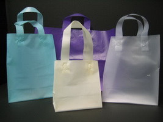
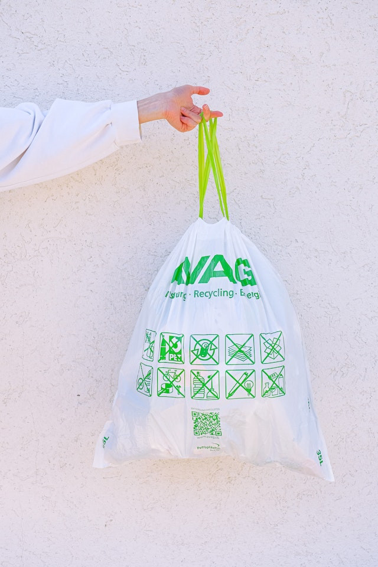
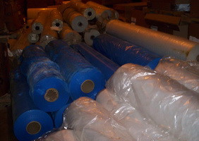
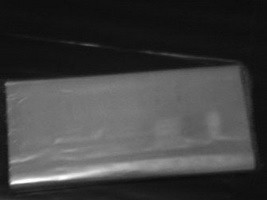
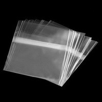
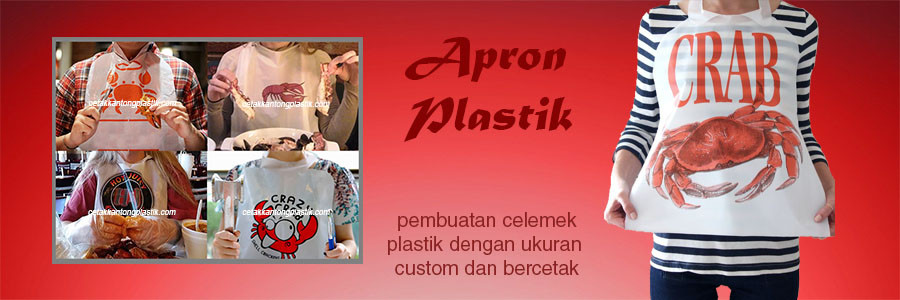
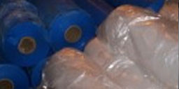

HD / HDPE
Tahan panas dan umum digunakan untuk kantong belanja toko, supermarket, hotel, dan kebutuhan serbaguna.
Kantong BelanjaRetailSupermarket
Aneka Plastik adalah supplier, distributor dan spesialis cetak kantong plastik melalui sablon dan rotogravure. Sejak 1986 kami melayani berbagai kebutuhan kemasan plastik dengan ukuran dan konsep yang dapat disesuaikan.

Empat kategori utama untuk kebutuhan retail, makanan, laundry, apparel, promosi, dan kemasan bisnis lainnya.

Tahan panas dan umum digunakan untuk kantong belanja toko, supermarket, hotel, dan kebutuhan serbaguna.

Fleksibel dan tahan suhu dingin. Cocok untuk shopping bag, plastik es, spare part, dan banyak kebutuhan industri.

Jernih dan rapi untuk plastik laundry, makanan ringan, roti, alat tulis dan produk retail.

Plastik bening dengan tampilan premium untuk packaging baju, undangan, roti, dan kemasan display.
Produksi kantong plastik untuk kebutuhan usaha dan industri.
Distribusi terjadwal dengan layanan pengiriman area Jabodetabek.
Ukuran, konsep dan desain cetak dapat disesuaikan kebutuhan brand.
Pilihan efektif untuk kebutuhan cetak tertentu dan jumlah fleksibel.
Printing untuk hasil cetak konsisten, tajam dan siap kebutuhan volume besar.
Berdiri sejak 1986.
Fokus pada hasil dan konsistensi.
Ukuran dan desain custom.
Estimasi produksi tergantung quantity.
Konsultasi sesuai kebutuhan.
Franco area Jabodetabek.

Apron Plastik Custom
Roll Material“Diskusikan material, ukuran, ketebalan dan desain yang Anda perlukan. Tim kami akan membantu menentukan solusi yang sesuai.”
Konsultasi kebutuhan“Sablon manual maupun printing rotogravure dapat dipilih sesuai karakter pekerjaan dan quantity.”
Metode cetak fleksibel“Pengiriman sampai ke tempat pemesan untuk area Jabodetabek tersedia sebagai bagian dari layanan kami.”
DistribusiKonsultasikan jenis material, ukuran, desain, quantity dan metode cetak.